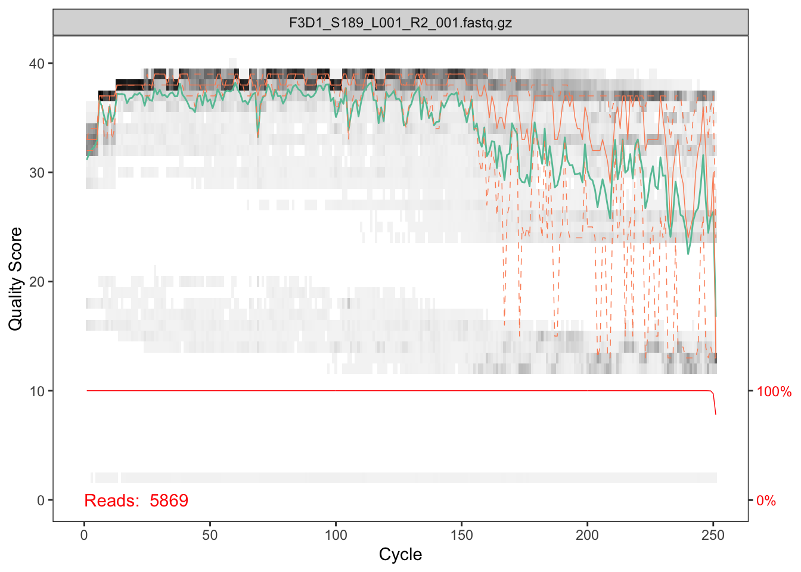

HW10 - Lab 01: Amplicon Sequence Denoising via DADA2
Roberto Villegas-Diaz
Sun Dec 8 14:44:07 2019
1 Introduction
1.1 Motivation
Here we walk through the DADA2 pipeline on a small multi-sample dataset. Our starting point is a set of Illumina-sequenced paired-end fastq files that have been split (“demultiplexed”) by sample and from which the barcodes/adapters/non-natural-bits have already been removed from the sequences.
The end product of the DADA2 algorithm is a sequence table, analogous (but not equivalent in properties) to the ubiquitous “OTU table”, which records the number of times each biological sequence variant was observed in each sample – a “sequence by sample” table.
1.2 Taxonomic Classification
At the end of this example we also estimate a taxonomic classification of each output sequence – a feature of the data that is often very useful for a microbiologist/ecologist tasked with translating your experimental results into biologically meaningful findings. How and where this taxonomy can be used is addressed later in the workshop. Strictly speaking, as an unsupervised method, the DADA2 algorithm does not do any taxonomic classification; however, it is convenient and useful thing to do right away for specific types of amplicon sequences – especially 16S rRNA amplicons – and so this task has some support in the dada2 package. The statistical problem of 16S sequence fragment classification is actually an interesting and hard one, especially as reference databases rapidly grow and change in quantity and quality. You very well may want to revisit the approach that we use here for your own sequence classification and consider better performing alternatives. The taxonomic classification step is purely independent of DADA2, and any other classification method can be applied to its output of “denoised” amplicon sequences and their abundances.
1.3 Big Data
DADA2 actually has very good scaling properties for large datasets of either large reads per sample, large numbers of samples, or both. The dada2 package has recently added some convenience methods for making it easier to do one of the approaches that takes advantage of these computational scaling properties.
Note that there are several reasonable ways to organize your parallelization scheme for running DADA2 on a large dataset. All of these take advantage of the same property, that DADA2 can operate on samples independently because the results – inferred noise-free sequences – are inherently comparable across samples, and even experiments. The most convenient or cost-effective or time-effective approach to parallelization might be different on your avaialable compute resources. I am happy to discuss these alternatives in more detail if you are interested.
The easiest to use parallelization approach is described in the DADA2 Big Data Tutorial, which is an alternative tutorial to this one where the focus is documenting the convenience methods supporting parallelization for DADA2. This particular approach assumes that you have multiple cores available, and enough memory (RAM) to support the simultaneous operation of DADA2 algorithm. Whether this is true depends on both your data and your system.
In my own work, we use a different parallelization approach that makes more sense for the cost structure of Amazon AWS computing. If you plan to use a large academic cluster or large-memory servers for your dada2-ing, then the approach shown in the DADA2 Big Data Tutorial is probably a great choice.
2 Getting ready
First we load the necessary libraries. If you don’t already have the dada2 package, see the dada2 installation instructions. The ShortRead package is available from Bioconductor, and ggplot2 from CRAN or Bioconductor:
library(dada2); packageVersion("dada2")## [1] '1.12.1'library(ShortRead); packageVersion("ShortRead")## [1] '1.42.0'library(ggplot2); packageVersion("ggplot2")## [1] '3.2.1'The data we will be working with are the same as those in the Mothur Miseq SOP walkthrough. Download the example data used in the Mother MiSeq SOP and unzip it. These files represent longitudinal samples from a mouse post-weaning as well as one mock community control. But for now just consider them as paired-end fastq files to be processed. Download the data, extract it, and then define the following path variable so that it points to the extracted directory on your machine:
path <- "data/MiSeq_SOP/raw_sequences"
dir.exists(path)## [1] TRUEWe are going to write our filtered sequences into an adjacent directory, rather than overwrite the raw sequences. Let’s define that path now.
# Make filenames for the filtered fastq files in an adjacent directory.
dirFiltSeqs = file.path(dirname(path), "filtered_sequences")
dirFiltSeqs## [1] "data/MiSeq_SOP/filtered_sequences"if(!dir.exists(dirFiltSeqs)){
dir.create(dirFiltSeqs)
}Now let’s check that the amplicon sequencing files that we expect are present
fns <- list.files(path, full.names = TRUE)
fns## [1] "data/MiSeq_SOP/raw_sequences/F3D0_S188_L001_R1_001.fastq.gz"
## [2] "data/MiSeq_SOP/raw_sequences/F3D0_S188_L001_R2_001.fastq.gz"
## [3] "data/MiSeq_SOP/raw_sequences/F3D1_S189_L001_R1_001.fastq.gz"
## [4] "data/MiSeq_SOP/raw_sequences/F3D1_S189_L001_R2_001.fastq.gz"
## [5] "data/MiSeq_SOP/raw_sequences/F3D141_S207_L001_R1_001.fastq.gz"
## [6] "data/MiSeq_SOP/raw_sequences/F3D141_S207_L001_R2_001.fastq.gz"
## [7] "data/MiSeq_SOP/raw_sequences/F3D142_S208_L001_R1_001.fastq.gz"
## [8] "data/MiSeq_SOP/raw_sequences/F3D142_S208_L001_R2_001.fastq.gz"
## [9] "data/MiSeq_SOP/raw_sequences/F3D143_S209_L001_R1_001.fastq.gz"
## [10] "data/MiSeq_SOP/raw_sequences/F3D143_S209_L001_R2_001.fastq.gz"
## [11] "data/MiSeq_SOP/raw_sequences/F3D144_S210_L001_R1_001.fastq.gz"
## [12] "data/MiSeq_SOP/raw_sequences/F3D144_S210_L001_R2_001.fastq.gz"
## [13] "data/MiSeq_SOP/raw_sequences/F3D145_S211_L001_R1_001.fastq.gz"
## [14] "data/MiSeq_SOP/raw_sequences/F3D145_S211_L001_R2_001.fastq.gz"
## [15] "data/MiSeq_SOP/raw_sequences/F3D146_S212_L001_R1_001.fastq.gz"
## [16] "data/MiSeq_SOP/raw_sequences/F3D146_S212_L001_R2_001.fastq.gz"
## [17] "data/MiSeq_SOP/raw_sequences/F3D147_S213_L001_R1_001.fastq.gz"
## [18] "data/MiSeq_SOP/raw_sequences/F3D147_S213_L001_R2_001.fastq.gz"
## [19] "data/MiSeq_SOP/raw_sequences/F3D148_S214_L001_R1_001.fastq.gz"
## [20] "data/MiSeq_SOP/raw_sequences/F3D148_S214_L001_R2_001.fastq.gz"
## [21] "data/MiSeq_SOP/raw_sequences/F3D149_S215_L001_R1_001.fastq.gz"
## [22] "data/MiSeq_SOP/raw_sequences/F3D149_S215_L001_R2_001.fastq.gz"
## [23] "data/MiSeq_SOP/raw_sequences/F3D150_S216_L001_R1_001.fastq.gz"
## [24] "data/MiSeq_SOP/raw_sequences/F3D150_S216_L001_R2_001.fastq.gz"
## [25] "data/MiSeq_SOP/raw_sequences/F3D2_S190_L001_R1_001.fastq.gz"
## [26] "data/MiSeq_SOP/raw_sequences/F3D2_S190_L001_R2_001.fastq.gz"
## [27] "data/MiSeq_SOP/raw_sequences/F3D3_S191_L001_R1_001.fastq.gz"
## [28] "data/MiSeq_SOP/raw_sequences/F3D3_S191_L001_R2_001.fastq.gz"
## [29] "data/MiSeq_SOP/raw_sequences/F3D5_S193_L001_R1_001.fastq.gz"
## [30] "data/MiSeq_SOP/raw_sequences/F3D5_S193_L001_R2_001.fastq.gz"
## [31] "data/MiSeq_SOP/raw_sequences/F3D6_S194_L001_R1_001.fastq.gz"
## [32] "data/MiSeq_SOP/raw_sequences/F3D6_S194_L001_R2_001.fastq.gz"
## [33] "data/MiSeq_SOP/raw_sequences/F3D7_S195_L001_R1_001.fastq.gz"
## [34] "data/MiSeq_SOP/raw_sequences/F3D7_S195_L001_R2_001.fastq.gz"
## [35] "data/MiSeq_SOP/raw_sequences/F3D8_S196_L001_R1_001.fastq.gz"
## [36] "data/MiSeq_SOP/raw_sequences/F3D8_S196_L001_R2_001.fastq.gz"
## [37] "data/MiSeq_SOP/raw_sequences/F3D9_S197_L001_R1_001.fastq.gz"
## [38] "data/MiSeq_SOP/raw_sequences/F3D9_S197_L001_R2_001.fastq.gz"
## [39] "data/MiSeq_SOP/raw_sequences/Icon\r"
## [40] "data/MiSeq_SOP/raw_sequences/Mock_S280_L001_R1_001.fastq.gz"
## [41] "data/MiSeq_SOP/raw_sequences/Mock_S280_L001_R2_001.fastq.gz"If the packages successfully loaded and your listed files match those here, then you are ready to go through the DADA2 pipeline.
3 Filter, Trim Sequences
3.1 Prepare sequence file names
First we read in the file names for all the fastq files and do a little string manipulation to get lists of the forward and reverse fastq files in matched order:
fastqs <- fns[grepl("\\.fastq\\.gz$", fns)]
# Sort ensures forward/reverse files are in same order
fastqs <- sort(fastqs)
# Just the forward read files
fnFs <- fastqs[grepl("_R1", fastqs)]
# Just the reverse read files
fnRs <- fastqs[grepl("_R2", fastqs)]
# In this case, you can get sample names
# from the first part of the forward read filenames
sample.names <- sapply(strsplit(basename(fnFs), "_"), `[`, 1)
sample.names## [1] "F3D0" "F3D1" "F3D141" "F3D142" "F3D143" "F3D144" "F3D145" "F3D146"
## [9] "F3D147" "F3D148" "F3D149" "F3D150" "F3D2" "F3D3" "F3D5" "F3D6"
## [17] "F3D7" "F3D8" "F3D9" "Mock"3.2 Examine quality profiles of forward and reverse reads
It is always important to look at your data. We start by visualizing the quality profiles along the sequencing reads.
Visualize the quality profile of the forward reads:
plotQualityProfile(fnFs[[1]])## Scale for 'y' is already present. Adding another scale for 'y', which will
## replace the existing scale.
plotQualityProfile(fnFs[[2]])## Scale for 'y' is already present. Adding another scale for 'y', which will
## replace the existing scale.
The forward reads are of good quality. It is generally a good idea to trim the first 10 bases of Illumina sequences, as error rates are higher and less well-controlled at the start of Illumina sequencing. It is also advisable to trim the very end, for similar reasons. There is no suggestion from the quality profiles that any additional trimming is needed, so for the forward reads we will trim the first 10 nucleotides and truncate at position 240 (trimming the last 10 nucleotides).
Visualize the quality profile of the reverse reads:
plotQualityProfile(fnRs[[1]])## Scale for 'y' is already present. Adding another scale for 'y', which will
## replace the existing scale.plotQualityProfile(fnRs[[2]])## Scale for 'y' is already present. Adding another scale for 'y', which will
## replace the existing scale.
The reverse reads have significantly worse quality, especially towards the end of the reads, which is quite common in Illumina paired-end sequencing. This isn’t too worrisome, DADA2 incorporates quality information into its error model so the algorithm is fairly robust to lower quality sequence, but some trimming as the average qualities crash is still a good idea. Here we will trim the first 10 nucleotides (as standard) and truncate at position 160 where the quality distribution crashes.
3.3 Perform filtering and trimming
We chose our trimming parameters by inspecting the quality profiles. The filtering parameters we’ll use are standard: maxN=0 (DADA2 requires no Ns), truncQ=2 (quality score 2 in Illumina means “stop using this read”) and maxEE=2. The maxEE parameter sets the maximum number of “expected errors” allowed in a read. Setting a threshold on expected errors is a better filter than simply averaging quality scores. We use the fastqPairedFilter function to jointly filter the forward and reverse reads.
Further prepare file names
if(!dir.exists(dirFiltSeqs)){
dir.create(dirFiltSeqs)
}
(filtFs <- file.path(dirFiltSeqs, paste0(sample.names, "_F_filt.fastq.gz")))## [1] "data/MiSeq_SOP/filtered_sequences/F3D0_F_filt.fastq.gz"
## [2] "data/MiSeq_SOP/filtered_sequences/F3D1_F_filt.fastq.gz"
## [3] "data/MiSeq_SOP/filtered_sequences/F3D141_F_filt.fastq.gz"
## [4] "data/MiSeq_SOP/filtered_sequences/F3D142_F_filt.fastq.gz"
## [5] "data/MiSeq_SOP/filtered_sequences/F3D143_F_filt.fastq.gz"
## [6] "data/MiSeq_SOP/filtered_sequences/F3D144_F_filt.fastq.gz"
## [7] "data/MiSeq_SOP/filtered_sequences/F3D145_F_filt.fastq.gz"
## [8] "data/MiSeq_SOP/filtered_sequences/F3D146_F_filt.fastq.gz"
## [9] "data/MiSeq_SOP/filtered_sequences/F3D147_F_filt.fastq.gz"
## [10] "data/MiSeq_SOP/filtered_sequences/F3D148_F_filt.fastq.gz"
## [11] "data/MiSeq_SOP/filtered_sequences/F3D149_F_filt.fastq.gz"
## [12] "data/MiSeq_SOP/filtered_sequences/F3D150_F_filt.fastq.gz"
## [13] "data/MiSeq_SOP/filtered_sequences/F3D2_F_filt.fastq.gz"
## [14] "data/MiSeq_SOP/filtered_sequences/F3D3_F_filt.fastq.gz"
## [15] "data/MiSeq_SOP/filtered_sequences/F3D5_F_filt.fastq.gz"
## [16] "data/MiSeq_SOP/filtered_sequences/F3D6_F_filt.fastq.gz"
## [17] "data/MiSeq_SOP/filtered_sequences/F3D7_F_filt.fastq.gz"
## [18] "data/MiSeq_SOP/filtered_sequences/F3D8_F_filt.fastq.gz"
## [19] "data/MiSeq_SOP/filtered_sequences/F3D9_F_filt.fastq.gz"
## [20] "data/MiSeq_SOP/filtered_sequences/Mock_F_filt.fastq.gz"(filtRs <- file.path(dirFiltSeqs, paste0(sample.names, "_R_filt.fastq.gz")))## [1] "data/MiSeq_SOP/filtered_sequences/F3D0_R_filt.fastq.gz"
## [2] "data/MiSeq_SOP/filtered_sequences/F3D1_R_filt.fastq.gz"
## [3] "data/MiSeq_SOP/filtered_sequences/F3D141_R_filt.fastq.gz"
## [4] "data/MiSeq_SOP/filtered_sequences/F3D142_R_filt.fastq.gz"
## [5] "data/MiSeq_SOP/filtered_sequences/F3D143_R_filt.fastq.gz"
## [6] "data/MiSeq_SOP/filtered_sequences/F3D144_R_filt.fastq.gz"
## [7] "data/MiSeq_SOP/filtered_sequences/F3D145_R_filt.fastq.gz"
## [8] "data/MiSeq_SOP/filtered_sequences/F3D146_R_filt.fastq.gz"
## [9] "data/MiSeq_SOP/filtered_sequences/F3D147_R_filt.fastq.gz"
## [10] "data/MiSeq_SOP/filtered_sequences/F3D148_R_filt.fastq.gz"
## [11] "data/MiSeq_SOP/filtered_sequences/F3D149_R_filt.fastq.gz"
## [12] "data/MiSeq_SOP/filtered_sequences/F3D150_R_filt.fastq.gz"
## [13] "data/MiSeq_SOP/filtered_sequences/F3D2_R_filt.fastq.gz"
## [14] "data/MiSeq_SOP/filtered_sequences/F3D3_R_filt.fastq.gz"
## [15] "data/MiSeq_SOP/filtered_sequences/F3D5_R_filt.fastq.gz"
## [16] "data/MiSeq_SOP/filtered_sequences/F3D6_R_filt.fastq.gz"
## [17] "data/MiSeq_SOP/filtered_sequences/F3D7_R_filt.fastq.gz"
## [18] "data/MiSeq_SOP/filtered_sequences/F3D8_R_filt.fastq.gz"
## [19] "data/MiSeq_SOP/filtered_sequences/F3D9_R_filt.fastq.gz"
## [20] "data/MiSeq_SOP/filtered_sequences/Mock_R_filt.fastq.gz"Execute filtering of forward and reverse reads:
# Filter
for(i in seq_along(fnFs)) {
fastqPairedFilter(fn = c(fnFs[i], fnRs[i]),
fout = c(filtFs[i], filtRs[i]),
trimLeft = c(10, 10),
truncLen = c(240, 160),
maxN = 0,
maxEE = 2,
truncQ = 2,
compress = TRUE, verbose = TRUE)
}## Overwriting file:data/MiSeq_SOP/filtered_sequences/F3D0_F_filt.fastq.gz## Overwriting file:data/MiSeq_SOP/filtered_sequences/F3D0_R_filt.fastq.gz## Read in 7793 paired-sequences, output 7139 (91.6%) filtered paired-sequences.## Overwriting file:data/MiSeq_SOP/filtered_sequences/F3D1_F_filt.fastq.gz## Overwriting file:data/MiSeq_SOP/filtered_sequences/F3D1_R_filt.fastq.gz## Read in 5869 paired-sequences, output 5314 (90.5%) filtered paired-sequences.## Overwriting file:data/MiSeq_SOP/filtered_sequences/F3D141_F_filt.fastq.gz## Overwriting file:data/MiSeq_SOP/filtered_sequences/F3D141_R_filt.fastq.gz## Read in 5958 paired-sequences, output 5478 (91.9%) filtered paired-sequences.## Overwriting file:data/MiSeq_SOP/filtered_sequences/F3D142_F_filt.fastq.gz## Overwriting file:data/MiSeq_SOP/filtered_sequences/F3D142_R_filt.fastq.gz## Read in 3183 paired-sequences, output 2926 (91.9%) filtered paired-sequences.## Overwriting file:data/MiSeq_SOP/filtered_sequences/F3D143_F_filt.fastq.gz## Overwriting file:data/MiSeq_SOP/filtered_sequences/F3D143_R_filt.fastq.gz## Read in 3178 paired-sequences, output 2955 (93%) filtered paired-sequences.## Overwriting file:data/MiSeq_SOP/filtered_sequences/F3D144_F_filt.fastq.gz## Overwriting file:data/MiSeq_SOP/filtered_sequences/F3D144_R_filt.fastq.gz## Read in 4827 paired-sequences, output 4323 (89.6%) filtered paired-sequences.## Overwriting file:data/MiSeq_SOP/filtered_sequences/F3D145_F_filt.fastq.gz## Overwriting file:data/MiSeq_SOP/filtered_sequences/F3D145_R_filt.fastq.gz## Read in 7377 paired-sequences, output 6762 (91.7%) filtered paired-sequences.## Overwriting file:data/MiSeq_SOP/filtered_sequences/F3D146_F_filt.fastq.gz## Overwriting file:data/MiSeq_SOP/filtered_sequences/F3D146_R_filt.fastq.gz## Read in 5021 paired-sequences, output 4580 (91.2%) filtered paired-sequences.## Overwriting file:data/MiSeq_SOP/filtered_sequences/F3D147_F_filt.fastq.gz## Overwriting file:data/MiSeq_SOP/filtered_sequences/F3D147_R_filt.fastq.gz## Read in 17070 paired-sequences, output 15695 (91.9%) filtered paired-sequences.## Overwriting file:data/MiSeq_SOP/filtered_sequences/F3D148_F_filt.fastq.gz## Overwriting file:data/MiSeq_SOP/filtered_sequences/F3D148_R_filt.fastq.gz## Read in 12405 paired-sequences, output 11448 (92.3%) filtered paired-sequences.## Overwriting file:data/MiSeq_SOP/filtered_sequences/F3D149_F_filt.fastq.gz## Overwriting file:data/MiSeq_SOP/filtered_sequences/F3D149_R_filt.fastq.gz## Read in 13083 paired-sequences, output 12064 (92.2%) filtered paired-sequences.## Overwriting file:data/MiSeq_SOP/filtered_sequences/F3D150_F_filt.fastq.gz## Overwriting file:data/MiSeq_SOP/filtered_sequences/F3D150_R_filt.fastq.gz## Read in 5509 paired-sequences, output 5054 (91.7%) filtered paired-sequences.## Overwriting file:data/MiSeq_SOP/filtered_sequences/F3D2_F_filt.fastq.gz## Overwriting file:data/MiSeq_SOP/filtered_sequences/F3D2_R_filt.fastq.gz## Read in 19620 paired-sequences, output 18130 (92.4%) filtered paired-sequences.## Overwriting file:data/MiSeq_SOP/filtered_sequences/F3D3_F_filt.fastq.gz## Overwriting file:data/MiSeq_SOP/filtered_sequences/F3D3_R_filt.fastq.gz## Read in 6758 paired-sequences, output 6275 (92.9%) filtered paired-sequences.## Overwriting file:data/MiSeq_SOP/filtered_sequences/F3D5_F_filt.fastq.gz## Overwriting file:data/MiSeq_SOP/filtered_sequences/F3D5_R_filt.fastq.gz## Read in 4448 paired-sequences, output 4068 (91.5%) filtered paired-sequences.## Overwriting file:data/MiSeq_SOP/filtered_sequences/F3D6_F_filt.fastq.gz## Overwriting file:data/MiSeq_SOP/filtered_sequences/F3D6_R_filt.fastq.gz## Read in 7989 paired-sequences, output 7394 (92.6%) filtered paired-sequences.## Overwriting file:data/MiSeq_SOP/filtered_sequences/F3D7_F_filt.fastq.gz## Overwriting file:data/MiSeq_SOP/filtered_sequences/F3D7_R_filt.fastq.gz## Read in 5129 paired-sequences, output 4772 (93%) filtered paired-sequences.## Overwriting file:data/MiSeq_SOP/filtered_sequences/F3D8_F_filt.fastq.gz## Overwriting file:data/MiSeq_SOP/filtered_sequences/F3D8_R_filt.fastq.gz## Read in 5294 paired-sequences, output 4890 (92.4%) filtered paired-sequences.## Overwriting file:data/MiSeq_SOP/filtered_sequences/F3D9_F_filt.fastq.gz## Overwriting file:data/MiSeq_SOP/filtered_sequences/F3D9_R_filt.fastq.gz## Read in 7070 paired-sequences, output 6525 (92.3%) filtered paired-sequences.## Overwriting file:data/MiSeq_SOP/filtered_sequences/Mock_F_filt.fastq.gz## Overwriting file:data/MiSeq_SOP/filtered_sequences/Mock_R_filt.fastq.gz## Read in 4779 paired-sequences, output 4333 (90.7%) filtered paired-sequences.We now have trimmed and filtered fastq files. The preceding filtering can be replaced by other filtering methods. However, in order for the later DADA2 mergePairs step to work, the filtered forward and reverse reads must be in matched order! The fastq files that come off the Illumina machine have this property, and fastqPairedFilter preserves it, but not all filtering tools do so.
Big Data Note: You may find it more convenient to use the filterAndTrim() wrapper function, as described in the DADA2 Big Data Tutorial.
4 Dereplicate sequences
In the dereplication step, all reads with identical sequences are combined into “unique sequences” with a corresponding abundance, i.e. the number of reads with that same sequence. Dereplication is a part of most pipelines because it reduces computation time by eliminating redundant comparisons between sequences.
Dereplication in the DADA2 pipeline has one crucial addition: DADA2 retains a summary of the quality information associated with each unique sequence. DADA2 constructs a “consensus” quality profile for each unique sequence by averaging the positional qualities from the dereplicated reads. These consensus quality profiles inform the error model of the subsequent denoising step, significantly increasing DADA2’s accuracy.
Dereplicate the filtered fastq files:
derepFs <- derepFastq(filtFs, verbose=TRUE)
derepRs <- derepFastq(filtRs, verbose=TRUE)
# Name the derep-class objects by the sample names
names(derepFs) <- sample.names
names(derepRs) <- sample.namesInspect the derep-class object returned by derepFastq:
derepFs[[1]]## derep-class: R object describing dereplicated sequencing reads
## $uniques: 7139 reads in 1866 unique sequences
## Sequence lengths: min=230, median=230, max=230
## $quals: Quality matrix dimension: 1866 230
## Consensus quality scores: min=12, median=37.74074, max=39
## $map: Map from reads to unique sequences: 2 2 49 1 62 ...Data structure notes: Dereplicated sequences are stored in the $uniques integer vector, which is named by the unique sequence and valued by the abundance of that sequence. Consensus quality scores are stored in the $quals matrix: rows correspond to unique sequences and columns to nucleotide position. The $map vector maps the reads into the $uniques vector, and is used later when we merge the forward and reverse reads.
5 Denoise Sequences
We are now ready to apply DADA2’s core sequence denoising algorithm to the dereplicated sequences. This is the step where we infer the “real” amplicon sequences, as opposed to sequences that contain one or more errors.
First a key consideration: DADA2 depends on a parametric error model, and we do not know the error rates for this dataset. Fortunately, DADA2 can jointly infer the error-rate parameters and the composition of the sample, at the cost of additional computation time. This is done by implementing an EM-like algorithm in which the error rates and the set of true sequences are alternately estimated until convergence.
To perform this joint inference with dada(...) we pass it the selfConsist=TRUE flag (if selfConsist=FALSE it simply uses the provided error rates). As in many optimization problems, the algorithm must begin with an initial guess. For this we take a set of error rates estimated from another Miseq 2x250 sequencing run (called tperr1, included with the package) and inflate them, as it is better to start with error rates that are too high than too low.
Perform joint sample inference and error rate estimation (takes a few minutes):
dadaFs <- dada(derepFs, err=inflateErr(tperr1,3),
selfConsist = TRUE)## selfConsist step 1 ....................
## selfConsist step 2
## selfConsist step 3
## selfConsist step 4
## selfConsist step 5
## Convergence after 5 rounds.dadaRs <- dada(derepRs, err=inflateErr(tperr1,3),
selfConsist = TRUE)## selfConsist step 1 ....................
## selfConsist step 2
## selfConsist step 3
## selfConsist step 4
## selfConsist step 5
## selfConsist step 6
## Convergence after 6 rounds.Inspecting the dada-class object returned by dada:
dadaFs[[1]]## dada-class: object describing DADA2 denoising results
## 134 sequence variants were inferred from 1866 input unique sequences.
## Key parameters: OMEGA_A = 1e-40, OMEGA_C = 1e-40, BAND_SIZE = 16The dada algorithm inferred 134 real variants from the 1866 unique sequences in the first sample. There is much more to the dada-class return object than this (see help(“dada-class”) for some info), including multiple diagnostics about the quality of each inferred sample sequence, but that is beyond the scope of an introductory tutorial. Let’s do one check on the quality of the error-rate estimation though before continuing.
Visualize estimated error rates:
plotErrors(dadaFs[[1]], nominalQ=TRUE)## Warning: Transformation introduced infinite values in continuous y-axis
## Warning: Transformation introduced infinite values in continuous y-axis
The error rates for each possible transition (eg. A->C, A->G, …) are shown. The points are the observed error rates for each consensus quality score. The black line is the estimated error rates after convergence. The red line is the error rates expected under the nominal definition of the Q-value.
The black line (the estimated rates) seem to be fitting the observed rates well, and the error rates drop with increased quality as expected. Everything looks reasonable and we proceed with confidence.
6 Merge paired reads
The forward and reverse reads in this dataset are highly overlapping, which allows us to further reduce the error rate by merging those overlapping reads together. Note that in the DADA2 pipeline merging is perfomed after denoising the forward read and the reverse reads. The core function here is mergePairs, which depends on the forward and reverse reads being in matching order at the time they were dereplicated!
Merge the denoised forward and reverse reads:
mergers <- mergePairs(dadaFs, derepFs,
dadaRs, derepRs,
verbose=TRUE)
# Inspect the merger data.frame from the first sample
head(mergers[[1]])## sequence
## 1 GCGAGCGTTATCCGGATTTATTGGGTTTAAAGGGTGCGCAGGCGGAAGATCAAGTCAGCGGTAAAATTGAGAGGCTCAACCTCTTCGAGCCGTTGAAACTGGTTTTCTTGAGTGAGCGAGAAGTATGCGGAATGCGTGGTGTAGCGGTGAAATGCATAGATATCACGCAGAACTCCGATTGCGAAGGCAGCATACCGGCGCTCAACTGACGCTCATGCACGAAAGTGTGGGT
## 2 GCGAGCGTTATCCGGATTTATTGGGTTTAAAGGGTGCGTAGGCGGCCTGCCAAGTCAGCGGTAAAATTGCGGGGCTCAACCCCGTACAGCCGTTGAAACTGCCGGGCTCGAGTGGGCGAGAAGTATGCGGAATGCGTGGTGTAGCGGTGAAATGCATAGATATCACGCAGAACCCCGATTGCGAAGGCAGCATACCGGCGCCCTACTGACGCTGAGGCACGAAAGTGCGGGG
## 3 GCGAGCGTTATCCGGATTTATTGGGTTTAAAGGGTGCGTAGGCGGGCTGTTAAGTCAGCGGTCAAATGTCGGGGCTCAACCCCGGCCTGCCGTTGAAACTGGCGGCCTCGAGTGGGCGAGAAGTATGCGGAATGCGTGGTGTAGCGGTGAAATGCATAGATATCACGCAGAACTCCGATTGCGAAGGCAGCATACCGGCGCCCGACTGACGCTGAGGCACGAAAGCGTGGGT
## 4 GCGAGCGTTATCCGGATTTATTGGGTTTAAAGGGTGCGTAGGCGGGCTTTTAAGTCAGCGGTAAAAATTCGGGGCTCAACCCCGTCCGGCCGTTGAAACTGGGGGCCTTGAGTGGGCGAGAAGAAGGCGGAATGCGTGGTGTAGCGGTGAAATGCATAGATATCACGCAGAACCCCGATTGCGAAGGCAGCCTTCCGGCGCCCTACTGACGCTGAGGCACGAAAGTGCGGGG
## 5 GCGAGCGTTATCCGGATTTATTGGGTTTAAAGGGTGCGCAGGCGGACTCTCAAGTCAGCGGTCAAATCGCGGGGCTCAACCCCGTTCCGCCGTTGAAACTGGGAGCCTTGAGTGCGCGAGAAGTAGGCGGAATGCGTGGTGTAGCGGTGAAATGCATAGATATCACGCAGAACTCCGATTGCGAAGGCAGCCTACCGGCGCGCAACTGACGCTCATGCACGAAAGCGTGGGT
## 6 GCAAGCGTTATCCGGAATTACTGGGTGTAAAGGGAGCGTAGACGGTAATGCAAGTCTGGAGTGAAAGGCGGGGGCCCAACCCCCGGACTGCTCTGGAAACTGTGTAACTGGAGTGCAGGAGAGGCAGGCGGAATTCCTAGTGTAGCGGTGAAATGCGTAGATATTAGGAGGAACACCAGTGGCGAAGGCGGCCTGCTGGACTGTAACTGACGTTGAGGCTCGAAAGCGTGGGG
## abundance forward reverse nmatch nmismatch nindel prefer accept
## 1 582 1 1 148 0 0 1 TRUE
## 2 495 2 2 148 0 0 1 TRUE
## 3 450 3 4 148 0 0 1 TRUE
## 4 442 4 3 148 0 0 2 TRUE
## 5 341 5 6 148 0 0 1 TRUE
## 6 282 10 7 147 0 0 2 TRUEWe now have a data.frame for each sample with the merged $sequence, its $abundance, and the indices of the merged $forward and $reverse denoised sequences. Paired reads that did not exactly overlap were removed by mergePairs().
7 Construct sequence table
We can now construct a “sequence table” analogous to the “OTU table” produced by OTU methods.
We also drop the Mock community portion of the data at this point.
Construct sequence table:
seqtab <- makeSequenceTable(mergers[names(mergers) != "Mock"])
dim(seqtab)## [1] 19 276# Inspect distribution of sequence lengths
table(nchar(colnames(seqtab)))##
## 231 232 233 234 235
## 1 86 183 5 1The sequence table is a matrix with rows corresponding (and named by) the samples and columns corresponding to (and named by) the sequence variants. It is worth checking on the distribution of sequence lengths after merging. Here we see a narrow range of sequence lengths, as we expect. If some sequences are much longer or shorter than expected, it may be worth removing those sequences as they may be the result of non-specific priming.
8 Remove chimeras
The dada() algorithm removes substitution and indel errors, but it does not remove chimeras. That is, chimeras that were present in the sequenced sample are included in the sequence table we generated. Therefore, we now remove the chimeric sequences.
The accuracy of the sequences after the dada-denoising step makes identifying chimeras easier than it is when dealing with fuzzy OTUs. The DADA2 method to do this is by identifying all sequences which can be exactly reconstructred as a bimera (two-parent chimera) from more abundant sequences. See the help file ?isBimeraDenovo for more information.
Remove chimeric sequences:
seqtab.nochim <- removeBimeraDenovo(seqtab, verbose=TRUE)
dim(seqtab.nochim)## [1] 19 223sum(seqtab.nochim)/sum(seqtab)## [1] 0.964846The fraction of chimeras varies based on factors including experimental procedures and sample complexity, but can be substantial. Here chimeras make up about 20% of the inferred sequence variants, but those variants account for <4% of the total sequence reads.
This is the final product of the core DADA2 pipeline: a sequence table that contains the counts of each denoised sequence variant in each sample.
9 Assign taxonomy
It is common at this point, especially in 16S or 18S amplicon sequencing, to classify denoised sequence variants taxonomically. The DADA2 package provides a native implementation of the RDP’s naive Bayesian classifier for this purpose. The assignTaxonomy(…) function takes a set of sequences and a training set of taxonomically classified sequences, and outputs the taxonomic assignments with at least minBoot bootstrap confidence.
Appropriately formatted training fasta files for
- the RDP training set 16,
- the RDP training set 14,
- the GreenGenes 13.8 release clustered at 97% identity, and
- the Silva reference database
are available for download here.
Download the rdp_train_set_16.fa.gz file, and place it in the directory with the fastq files (if you don’t already have it).
Assign taxonomy:
taxMat <- assignTaxonomy(seqs = seqtab.nochim,
refFasta = "data/rdp_train_set_16.fa.gz")
colnames(taxMat) <- c("Kingdom", "Phylum", "Class", "Order", "Family", "Genus")
table(taxMat[, "Phylum"])##
## Actinobacteria Bacteroidetes
## 6 17
## Candidatus_Saccharibacteria Cyanobacteria/Chloroplast
## 1 3
## Deinococcus-Thermus Firmicutes
## 1 185
## Proteobacteria Tenericutes
## 4 1
## Verrucomicrobia
## 1Unsurprisingly, Bacteroidetes and Firmicutes are among these fecal samples.
10 Evaluate accuracy
One of the provided samples was of a “mock community”, in which 20 known strains were mixed together and amplicon-sequenced (the mock community is supposed to be 21 strains, but P. acnes was absent in this instance). The reference sequences corresponding to these strains were provided along with the fastq files in the downloaded zip archive. We dropped the Mock sample when making our sequence table, but we can go back to that sample and compare the sequence variants inferred by DADA2 to the expected composition of the community.
DADA2 accuracy on mock community:
unqs.mock <- getUniques(removeBimeraDenovo(mergers[["Mock"]], verbose=TRUE))## Identified 0 bimeras out of 20 input sequences.message("\n", "DADA2 inferred ", length(unqs.mock), " unique sequences present in the Mock community.\n")##
## DADA2 inferred 20 unique sequences present in the Mock community.mockRef <- readFasta("data/MiSeq_SOP/HMP_MOCK.v35.fasta.gz")
match.ref <- sum(sapply(names(unqs.mock), function(x) any(grepl(x, as.character(sread(mockRef))))))
message("Of those, ", sum(match.ref), " were exact matches to the expected reference sequences.\n")## Of those, 20 were exact matches to the expected reference sequences.This mock community dataset contained 20 bacterial strains. DADA2 found 20 unique sequences all of which exactly match the reference genomes of the expected community members. The residual error rate after the DADA2 pipeline is 0%.
In comparison, when the Mothur pipeline is run on this same dataset, it finds 35 OTUs in this Mock community sample. Not only is DADA2 inferring exact sequences instead of fuzzy 97% OTUs, it is making fewer false positive inferences than the OTU construction methods. This is a meaningful difference, even for a dataset this small and simple.
Here ends the DADA2 portion of the tutorial.
11 Handoff to phyloseq
The DADA2 pipeline produced a sequence table and a taxonomy table which is appropriate for further analysis in phyloseq. We’ll also include the small amount of metadata we have – the samples are named by the gender (G), mouse subject number (X) and the day post-weaning (Y) it was sampled (eg. GXDY).
Import into phyloseq:
library(phyloseq); packageVersion("phyloseq")## [1] '1.28.0'library(ggplot2); packageVersion("ggplot2")## [1] '3.2.1'theme_set(theme_bw())
# Make a data.frame holding the sample data
samples.out <- rownames(seqtab.nochim)
subject <- sapply(strsplit(samples.out, "D"), `[`, 1)
gender <- substr(subject,1,1)
subject <- substr(subject,2,999)
day <- as.integer(sapply(strsplit(samples.out, "D"), `[`, 2))
samdf <- data.frame(Subject=subject, Gender=gender, Day=day)
samdf$When <- "Early"
samdf$When[samdf$Day>100] <- "Late"
rownames(samdf) <- samples.out
# Construct phyloseq object (straightforward from dada2 outputs)
ps <- phyloseq(otu_table(seqtab.nochim, taxa_are_rows=FALSE),
sample_data(samdf),
tax_table(taxMat))
ps## phyloseq-class experiment-level object
## otu_table() OTU Table: [ 223 taxa and 19 samples ]
## sample_data() Sample Data: [ 19 samples by 4 sample variables ]
## tax_table() Taxonomy Table: [ 223 taxa by 6 taxonomic ranks ]We are now ready to use phyloseq.
Visualize alpha-diversity: Use plot_richness
plot_richness(ps,
x="Day",
measures=c("Shannon", "Simpson"),
color="When")
No obvious systematic difference in alpha-diversity between early and late samples.
Ordinate:
ord.nmds.bray <- ordinate(ps,
method="NMDS",
distance="bray")## Square root transformation
## Wisconsin double standardization
## Run 0 stress 0.09114477
## Run 1 stress 0.09041719
## ... New best solution
## ... Procrustes: rmse 0.02815118 max resid 0.07072116
## Run 2 stress 0.1592918
## Run 3 stress 0.09041729
## ... Procrustes: rmse 6.289091e-05 max resid 0.0001102424
## ... Similar to previous best
## Run 4 stress 0.09008214
## ... New best solution
## ... Procrustes: rmse 0.01286277 max resid 0.04036441
## Run 5 stress 0.1603284
## Run 6 stress 0.1591518
## Run 7 stress 0.09114477
## Run 8 stress 0.09184283
## Run 9 stress 0.09114484
## Run 10 stress 0.1597714
## Run 11 stress 0.09184284
## Run 12 stress 0.1432116
## Run 13 stress 0.09008213
## ... New best solution
## ... Procrustes: rmse 2.898092e-05 max resid 8.903143e-05
## ... Similar to previous best
## Run 14 stress 0.09184284
## Run 15 stress 0.09114479
## Run 16 stress 0.09184283
## Run 17 stress 0.09184299
## Run 18 stress 0.09184283
## Run 19 stress 0.09114477
## Run 20 stress 0.09008213
## ... New best solution
## ... Procrustes: rmse 6.250204e-06 max resid 1.094682e-05
## ... Similar to previous best
## *** Solution reachedplot_ordination(physeq = ps,
ordination = ord.nmds.bray,
color="When",
title="Bray NMDS") +
geom_point(size = 6)
Ordination picks out a clear separation between the early and late samples.
Bar plot:
top20 <- names(sort(taxa_sums(ps), decreasing=TRUE))[1:20]
ps.top20 <- transform_sample_counts(ps, function(OTU) OTU/sum(OTU))
ps.top20 <- prune_taxa(top20, ps.top20)
plot_bar(ps.top20, x="Day", fill="Family") + facet_wrap(~When, scales="free_x")
Nothing glaringly obvious jumps out from the taxonomic distribution of the top 20 sequences to explain the early-late differentiation.
This was just a bare bones demonstration of how the data from DADA2 can be easily imported into phyloseq and interrogated. For further examples on the many analyses possible with phyloseq, see the phyloseq web site.